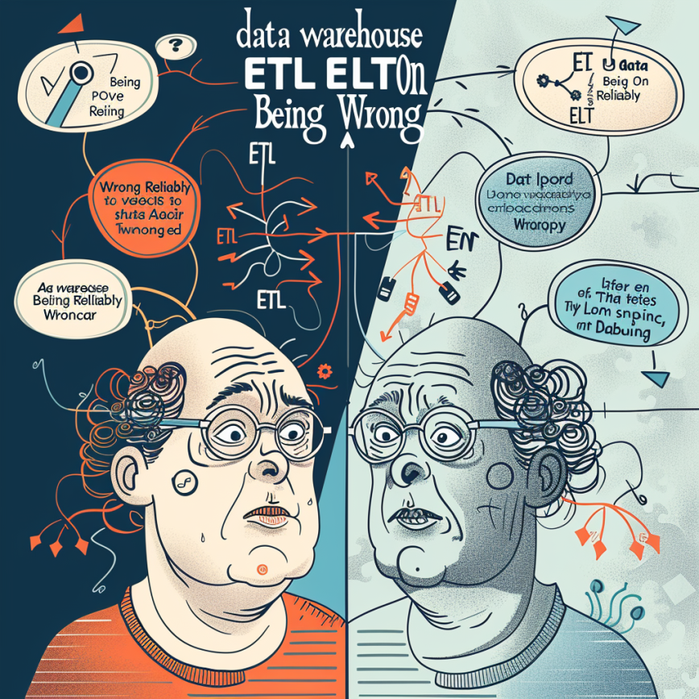

 One of my favorite episodes of Seinfeld was “The Opposite” from the end of the fifth season. In the episode George laments that all of his life choices have been wrong. Jerry remarks to him that “if every instinct you have is wrong, then the opposite would have to be right”. George puts this to the test immediately with remarkable early success. It’s an example of a perverse sort of reliabilist justification, one where a reliably unreliable source provides justification if you always do the opposite. I find a lot of the things that Bill Inmon says to be just like George Costanza, reliably wrong.
I’d probably forget about Inmon if he didn’t keep posting to LinkedIn. Take his latest nonsense ETL AND ELT which contains a number of falsehoods and fictions. Inmon likes to say that IBM and big vendors “never supported data warehouse”, which is perverse since Inmon knows that the architecture for the data warehouse was born at IBM and first published by Devlin and Murphy in 1988. (See An Architechture for a Business and Information System) Inmon is certainly aware of Devlin, a forty year veteran if the data warehousing industry. He’d have to be aware that IBM and other “large vendors” made billions supporting and promoting data warehousing. If they didn’t, please show us the records because the claim goes against all evidence.
Inmon tells fanciful story about people wanting to build data warehouses and that giving rise to extract transform load (ETL) as a data integration pattern, which is perverse because ETL as a data integration pattern dates back to the 70s. It’s a pattern that very much made sense for the first 20+ years of data management because one the primary limiters on every database was available storage. With limited space it made the most sense transform the data on the fly and integrate directly into the modeled data. It came at the cost of making changes expensive operations.
While the idea for Extract Load Transform (ELT) had been around for some time, it didn’t start to become a practical reality until the late-2000s when storage prices started dropping. Large analytical data warehouses appliances like the those from Netezza and Teradata had excess storage capacity relative to compute. This excess storage enabled landing large volume of data into stage tables that could then be transformed into the modeled warehouse. Changes could be made on the cheap because the staged data was readily available for remodeling. (Want receipts, Aginity implemented this pattern at Best Buy, Catalina, Autotrader, Bass Pro, Coke Cola, Philip Morris, Kroger, among many others)
Inmon gets both the history of data integration wrong, and why the patterns matter. Treat Inmon’s suggestions like Costanza’s, unreliable or reliably false.